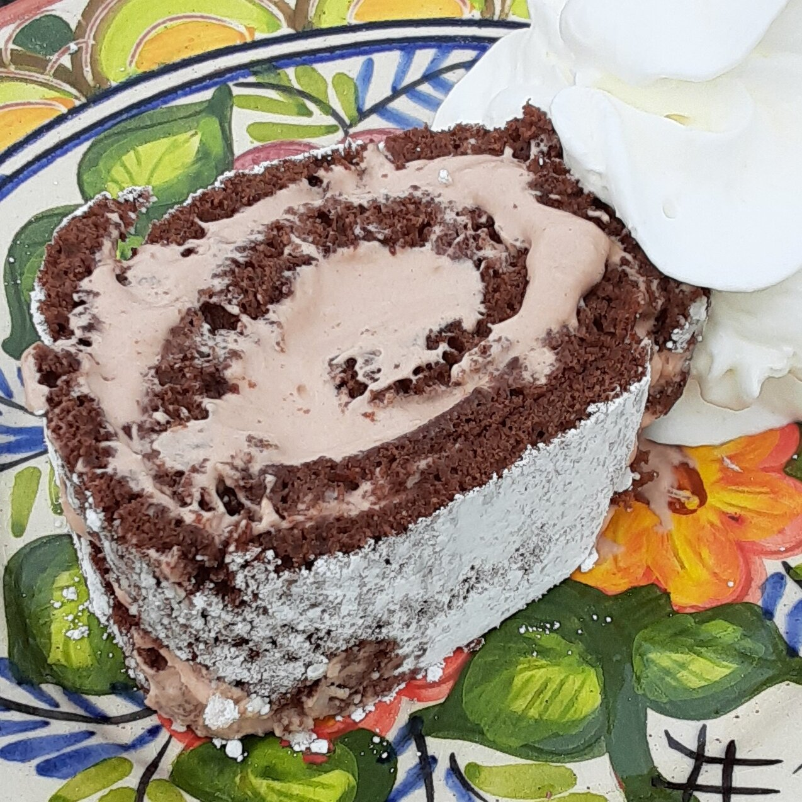

Chocolate Swiss Roll

Description
A nod to the classic childhood favorite, this chocolate cake roll combines light chocolate sponge cake with sweet vanilla whipped cream and chocolate ganache. Rich and totally irresistible, this dessert is for chocolate lovers everywhere.
This cake roll required more testing than usual because I was SO torn between using butter vs oil, cocoa powder vs melted chocolate, as well as the perfect amount of flour. I’m not kidding… I must have made at least 8 or 9 different chocolate cake rolls. (I lost count after #3!) Despite all the mediocre cakes filling up my brain (and freezer), the recipe testing process was incredibly enlightening. I learned that it’s a VERY thin line between rubbery chocolate sponge cake and good chocolate sponge cake. A line so thin that tightrope walkers would be nervous. Luckily I made all the mistakes so you don’t have to.
Ingredients Required
- Cooking Spray
- 0.25 Cup All-Purpose Powder
- 0.25 Cup Cocoa Powder
- 0.25 cup teaspoon Salt
- 0.125 cup Teaspoon Baking Soda
- 3 Eggs
- 0.25 Cup White Sugar
- 0.5 Cup Teaspoon Vanilla Extract
- 2.5 Tablespoons Melted Butter
- 0.75 Cups Of Heavy Cream
- 2 Teaspoons Powdered Sugar
- 0.5 Teaspoon Vanilla Extract
- 0.125 Cup Chocolate-Hazelnut Spread
Steps
- Preheat the oven to 325 degrees F (165 degrees C). Spray a jelly roll or sheet pan with cooking spray and line with parchment paper.
- Sift flour, cocoa, salt, and baking soda together in a medium bowl.
- Beat eggs and sugar in another bowl with an electric mixer on high speed until tripled in volume, about 5 minutes. Add 0.5 teaspoon vanilla extract. Beat in dry ingredients on low speed in thirds, alternating with melted butter, until just combined. Pour into the prepared pan (the thickness should be less than 0.25 inch).
- Bake in the preheated oven until a toothpick inserted into the center comes out clean, 8 to 9 minutes. Allow to cool completely.
- Flip cake upside-down out of the pan onto a new sheet of parchment paper. Remove the used parchment paper from the top of the cake gently. Roll cake, starting at one end of the paper, into a tube until it is completely rolled into the parchment. Refrigerate for 2 hours.
- Whip cream, powdered sugar, and vanilla extract together in a bowl. Mix in chocolate-hazelnut spread. Roll out the cake and spread filling evenly. Roll up the cake with the filling, keeping in mind that the cake might crack or tear easily.